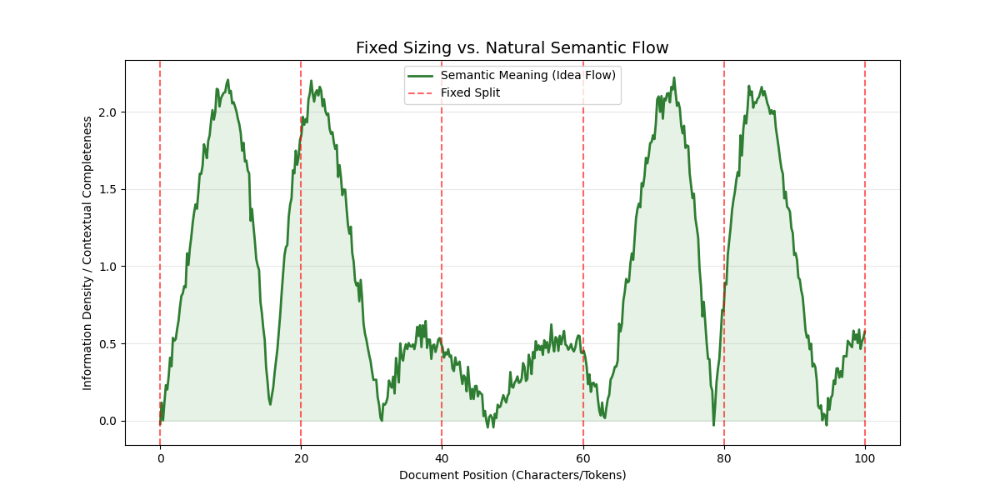
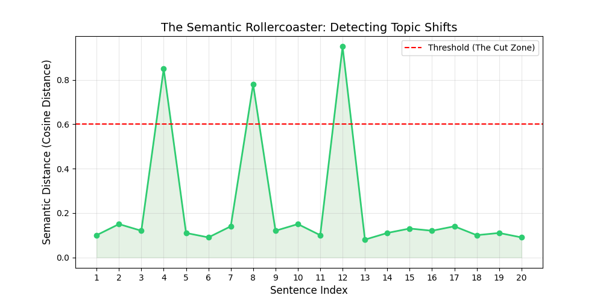
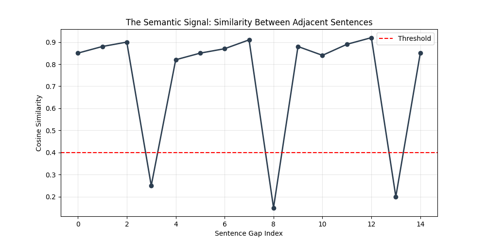
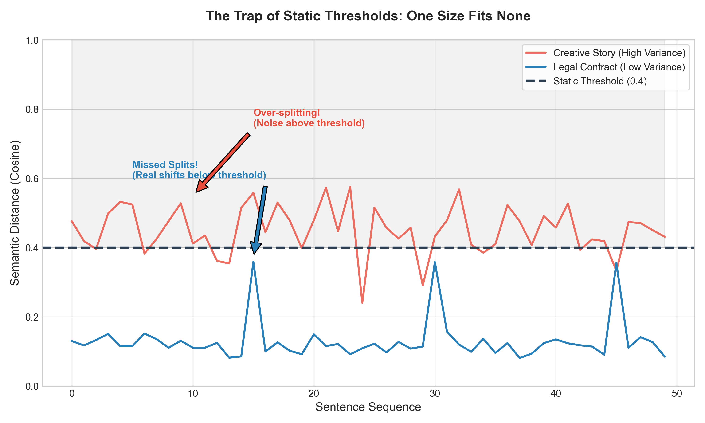
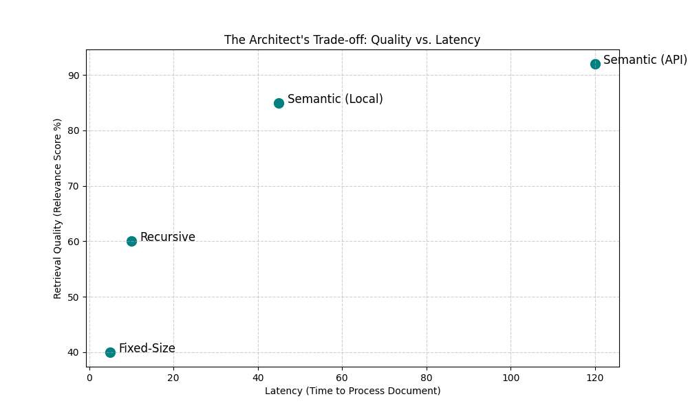

graph LR
A[User Query: <br> When does it shut down?] --> B{Retriever}
B --> C[Retrieves Chunk B: <br> 'temp exceeds 150C...']
C --> D[LLM Analysis]
D --> E[Error: Missing 'Shutdown' <br> context from Chunk A]
Semantic Segmentation: Breaking by Meaning
The “Cut-Off” Problem: Why Fixed Sizing Fails
- The Architect’s Mantra: “The LLM is only as smart as the context you give it.”
- The Pipeline Foundation: Data ingestion is the bedrock of RAG.
- The Failure Point: Mangled fragments = Hallucinations.
- Goal: Move from “Counting Characters” to “Preserving Meaning.”
Contextual Integrity
- The Principle: Every chunk must be a self-contained thought.
- The Goal: Zero “guessing” required by the LLM.
- The Atomic Unit of Meaning:
- Like a LEGO brick: Cut it in half, and it loses its “hooks.”
- Data “hooks” allow the retriever to connect queries to answers.
We Saw The “Mid-Sentence” Failure
- Mechanical Blindness:
RecursiveCharacterTextSplitterdoesn’t “read”; it counts. - The Anatomy of a Broken Chunk:
Original Logic
“The system triggers a shutdown if temperature > 150C and backup pump is inactive.”
The “Slicer” Result
- Chunk A: “…trigger an immediate shutdown if the inter”
- Chunk B: “nal temperature exceeds 150 degrees…”
Logic Severing: A Case Study
- Lost Entities: “Internal” becomes “inter” (Search fails).
- Broken Logic: The “Action” (Shutdown) is separated from the “Condition” (Temp/Pump).
“Garbage In, Hallucination Out”
- Information Asymmetry: LLMs hallucinate to bridge gaps we created.
- The Hallucination Chain:
- Query: “Is 160 degrees safe?”
- Retrieval: Only gets the “150 degrees” fragment.
- The Gap: LLM doesn’t see the “Shutdown” rule.
- The Invention: “It is likely safe if the pump is running.”
Result: A high-risk system failure due to a character-count constraint.
Syntactic vs. Semantic Impact
Image: Plot showing fixed-size red lines cutting through high-density information peaks vs semantic valleys
- Syntactic (Red Lines): Cuts through the “peaks” (Core Ideas).
- Semantic (Target): Cuts through the “valleys” (Natural Pauses).
Comparison: The Architect’s Verdict
| Feature | Syntactic (Fixed/Recursive) | Semantic (Meaning-Based) |
|---|---|---|
| Primary Metric | Character/Token Count | Topic/Intent Change |
| Logic | “Stop at 500 chars” | “Stop when subject changes” |
| Cost | Low Compute | Higher (Requires Embeddings) |
| Best For | Simple MVPs | Professional/Legal/Tech RAG |
The Mental Model: The Semantic Rollercoaster
The “Blind” Approach
- Fixed Chunking
- Cuts every \(N\) characters.
- Like a blindfolded gardener.
- Splitting branches mid-air.
The “Architect” Approach
- Semantic Chunking
- Cuts based on meaning.
- Like an expert editor.
- Identifying natural transitions.
The Coffee Shop Analogy
- Phase A: The Deep Dive
- “Grind size affects extraction.”
- “Water should be 200°F.”
- Context: Brewing Espresso.
- Phase B: The Semantic Jolt
- “Did you see the game last night?”
- “The quarterback was incredible.”
- Context: Sports.
The Architect’s Insight: A human senses the “jolt” instantly. Our system needs a “sensor” to detect this shift before the RAG retrieval fails.
Visualizing Meaning: Points in Space
graph LR
subgraph "The Security District"
A[Data is encrypted] --- B[AES-256 Standard]
B --- C[Rotate Keys Monthly]
end
C -.->|BIG GAP: Semantic Shift| D
subgraph "The Compute District"
D[NVIDIA H100 GPUs] --- E[4-Day Training Cycle]
end
style A fill:#f9f,stroke:#333
style B fill:#f9f,stroke:#333
style C fill:#f9f,stroke:#333
style D fill:#bbf,stroke:#333
style E fill:#bbf,stroke:#333
- Sentences are GPS Coordinates in a multi-dimensional city.
- Similar topics “cluster” together in specific districts.
- A topic switch is a teleportation across town.
The “Spike”: Detecting the Moment of Change
The Logic
- Valleys: Low distance between sentences. (Keep together)
- Peaks: Sudden jump in distance. (The “Cut” signal)
- Threshold: Our “tolerance” for change.

Embeddings: The Semantic Sensor
How do we calculate “distance” without reading every word?
- Input: Feed two sentences into an Embedding Model.
- Process: Model converts “vibe” into a Vector (list of numbers).
- Calculation: Use Cosine Similarity to measure the overlap.
Summary: The Architect’s Mindset
- Fixed Chunking is Structural
- Based on volume and storage limits.
- Semantic Chunking is Logical
- Based on intent and complete thoughts.
Goal: Create “Semantic Islands”—pure, unpolluted information blocks that ensure the LLM receives the right context every time.
The Architect’s Blueprint: Algorithm Logic
- The Goal: Move from “Mental Model” to a reproducible pipeline.
- The Strategy: Treat text as a Signal Processing problem.
- The Process: A 4-step modular workflow to identify semantic “breaks.”
graph LR
A[Raw Text] --> B[Tokenize]
B --> C[Embed]
C --> D[Compare]
D --> E[Split]
style E fill:#f96,stroke:#333,stroke-width:2px
Step 1: Sentence Tokenization
Defining the “Atomic Unit”
- The Atom: The Sentence, not the character or word.
- The Logic: Sentences represent the smallest unit of a complete thought.
- Avoid “Dirty” Data:
- Use robust libraries (NLTK, SpaCy).
- Handle edge cases: “Dr. Smith” or “e.g.” shouldn’t trigger a split.
Input
“The revenue grew by 10%. Dr. Smith reported this on Tuesday.”
Output
- “The revenue grew by 10%.”
- “Dr. Smith reported this on Tuesday.”
Step 2: Generating Embeddings
Translating Meaning to Math
- Vectorization: Convert each sentence \(s_i\) into a high-dimensional vector \(v_i\).
- Model Choice: Use efficient Transformers (e.g.,
all-MiniLM-L6-v2). - The “Context Window” Enhancement:
- Don’t just compare \(s_1\) to \(s_2\).
- Compare Sliding Windows (average of sentences \([1,2]\) vs \([3,4]\)).
- Benefit: Smooths out noise from short transitional phrases like “However,”.
Step 3: Cosine Similarity
Measuring the Distance in “Thought-Space”
- The Metric: Cosine Similarity (Score of 0.0 to 1.0).
- The Calculation: Compare adjacent pairs \((v_i, v_{i+1})\).
The Logic
- 1.0: Semantically identical.
- 0.0: Completely unrelated.
The Signal

Step 4: The ‘Breakpoint’
Identifying the Threshold (\(T\))
How do we decide when to “cut”?
- Static Threshold: Hard limit (e.g., \(T = 0.6\)). Simple, but rigid.
- Percentile-Based: Adaptive. Set \(T\) at the bottom 5th or 10th percentile of the document’s scores.
- Gradient-Based: Look for the “steepest drop” in the signal.
The Final Assembly: - If \(Score > T\): Keep building the current chunk. - If \(Score \leq T\): Close chunk; start a new one.
The Architectural Flowchart
graph LR
A[Raw <br> Document] --> B[Sentence <br> Tokenizer]
B --> C[List of <br> Sentences]
C --> D[Embedding <br> Model]
D --> E[Vector <br> Sequence]
E --> F[Calculate Cosine <br> Similarity Between Neighbors]
F --> G{Similarity < Threshold?}
G -- Yes --> H[Create Breakpoint <br> Or New Chunk]
G -- No --> I[Combine into <br> Current Chunk]
H --> J[Final Semantic Chunks]
I --> J
Why this works for Production
- Solves Context Fragmentation: No more cutting a “Revenue” paragraph in half.
- Higher Retrieval Accuracy: The LLM receives a “complete thought” as context.
- Coherent Responses: Reduced “hallucinations” caused by missing context.
Architect’s Rule: The system only cuts when the “Signal” drops—meaning the author has actually moved on.
System Reliability: Tuning the Threshold
- Transitioning from Prototype to Production.
- Why “Hard Thresholds” are a recipe for failure.
- Engineering trade-offs: Cost, Latency, and Quality.
- Goal: Moving from “Code that runs” to “Systems that scale.”
The Trap of Static Thresholds
The Problem
- Hard Thresholds: e.g., “Split if distance > 0.4”
- Legal Contracts: Dense, cohesive (Low variance).
- Creative Stories: Erratic, shifting (High variance).
- Result: Zero splits or “Micro-chunks.”
The Visual

The Solution: Percentile-Based Splitting
- Logic: Split at the \(X^{th}\) percentile of internal distances.
- Adaptive: The threshold moves based on the document’s own “gravity.”
- Focus: Capturing the top 5% or 2% of “Meaning Shifts.”
graph LR
A[Calculate All <br> Sentence Distances] --> B[Sort Distances]
B --> C[Identify 95th Percentile <br> Value]
C --> D{Is current distance <br> > 95th Percentile?}
D -- Yes --> E[Create Breakpoint]
D -- No --> F[Continue Chunk]
The “Semantic Tax”: Cost Analysis
Semantic chunking is high-fidelity but high-overhead.
| Feature | Recursive Splitting | Semantic Splitting |
|---|---|---|
| Compute Cost | Negligible | Moderate (Embeddings) |
| Latency | Near-instant | Model Dependent |
| API Tokens | Zero | High (if using Cloud APIs) |
Latency vs. Quality Matrix
Image: A scatter plot showing Recursive Splitting in the ‘Fast/Low Quality’ quadrant and Semantic Splitting in the ‘Slower/High Quality’ quadrant
- Recursive: Use for real-time “Chat with PDF” (< 2s target).
- Semantic: Use for “Knowledge Bases” (Ingest once, query 1000x).
Handling Noise: The Buffer Window
- The Danger: “Click here” or “Page 42” creates false peaks.
- The Safeguard: Use a Moving Average.
- Compare the average of the last 3 sentences to the next 3.
- Smoothing: Flattens the “Semantic Rollercoaster.”
The Robust Splitter: Pseudo-Code
def robust_split(text, percentile=95, min_size=200):
sentences = split_into_sentences(text)
embeddings = get_embeddings(sentences)
# Smoothing the signal
distances = calculate_cosine_distances(embeddings, window=3)
threshold = np.percentile(distances, percentile)
chunks = []
# Logic to enforce min_size and create breakpoints...
return chunks- Min/Max Constraints: Never allow “micro-chunks.”
- Context Preservation: Ensure every chunk is an “Idea.”
Section Summary: The Architect’s View
- Precision: Semantic Segmentation provides “High-Fidelity” context.
- Resilience: Use percentiles and smoothing to handle messy data.
- Efficiency: Balance the “Semantic Tax” with the “Retrieval Reward.”
- Outcome: The LLM receives a perfectly encapsulated “Idea.”